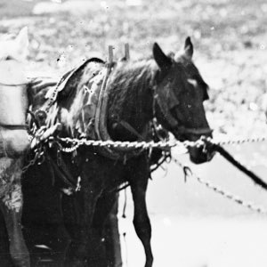
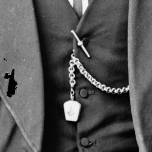
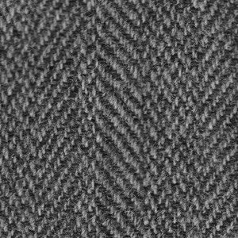
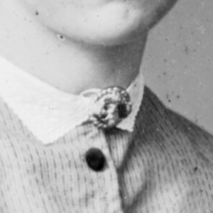

Things
Not surprisingly, there were many changes in both fashion and technology over the 41 years. Shawls fell out of favour, flannelette replaced flannel, and cuff-links (then known as sleeve links) became more popular. Elastic-side boots (similar to the Blundstones of today) peaked and then declined and jewellery, gems, and watches all became more popular.
Bicycles began to appear, cameras become more common, and trams and trains replace horses and bullocks. Much of this is a reflection of NSW's steadily growing wealth, as by the time of federation, Australia was one of the richest nations in the world on a per-capita basis.
-

horse
-

Albert chain
-

tweed
-

brooch
The Fashions
(and transport, tools, & other objects)
Select a category to see how they changed over the period (based on the number of times they're mentioned in the gazette by year). Graphs are scaled relative to the first term, which has the highest average rate over the period.
Note: some phrases are counted twice. e.g. a 'Scotch twill' shirt is also counted as a 'twill shirt'
- Peak year
The were
-
pocket handkerchief
-
Cobb & Co.
-
monogram
-
football
-
tram